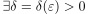
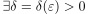
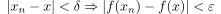
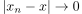
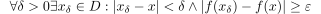
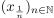
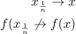

Folgenkriterium für Stetigkeit
2. Beweis
2.1. stetig  folgenstetig
folgenstetig
Sei  stetig in
stetig in  und sei eine Folge
Die Stetigkeit von in
und sei eine Folge
Die Stetigkeit von in  liefert.
Zu
liefert.
Zu   mit
 mit

2
Dabei ist  wegen dem Cauchysches Konvergenz-Kriterium gegeben
2.2. folgenstetig stetig
durch Beweis durch Kontraposition, d.h. nicht stetig nicht Folgenstetig
Sei nicht stetig, dann existiert ein mit:

3
Für die Folge  in  gilt dann:
gilt dann:

4
Also ist nicht folgenstetig in